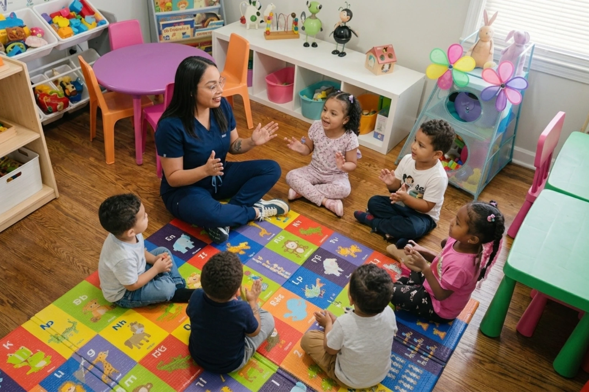

Actividades que Ayudan al Desarrollo Temprano de los Niños
Durante los primeros años de vida, los niños aprenden principalmente a través del juego, la exploración y la interacción con otros. Las actividades correctas pueden apoyar su lenguaje, creatividad, movimiento, independencia y habilidades sociales.

1. Lectura diaria
Leer cuentos infantiles ayuda a fortalecer el vocabulario, la comprensión, la imaginación y la conexión emocional entre el niño y el adulto. Incluso unos minutos de lectura al día pueden marcar una gran diferencia.
2. Juegos con bloques y formas
Los bloques, rompecabezas y juguetes de construcción ayudan a desarrollar la coordinación, la paciencia, la resolución de problemas y la comprensión de tamaños, colores y formas.
3. Canciones y movimiento
Cantar, bailar y seguir ritmos sencillos estimula el lenguaje, la memoria, la coordinación motora y la expresión emocional. La música también ayuda a crear rutinas alegres y participativas.
4. Actividades de arte
Pintar, colorear, pegar, recortar con supervisión y trabajar con materiales seguros permite que los niños expresen creatividad mientras fortalecen la motricidad fina.
5. Juego simbólico
Jugar a la casita, la tienda, el doctor o la escuela permite que los niños desarrollen imaginación, lenguaje, empatía y habilidades sociales mientras representan situaciones de la vida diaria.
6. Rutinas de independencia
Actividades como guardar juguetes, lavarse las manos, escoger una merienda o ayudar con tareas sencillas fortalecen la confianza y la autonomía del niño.
7. Juego al aire libre
Correr, saltar, caminar, lanzar pelotas y explorar espacios seguros ayuda al desarrollo físico, la coordinación y la salud general de los niños.
Reflexión Final
Las actividades más valiosas no siempre son complicadas. Muchas veces, los momentos simples de juego, lectura, conversación y exploración son los que más aportan al desarrollo temprano de los niños.
¿Buscas un daycare que apoye el desarrollo de tu hijo?
En Koinonia Fun Childcare combinamos juego, aprendizaje, rutinas y actividades educativas para apoyar el crecimiento integral de cada niño.